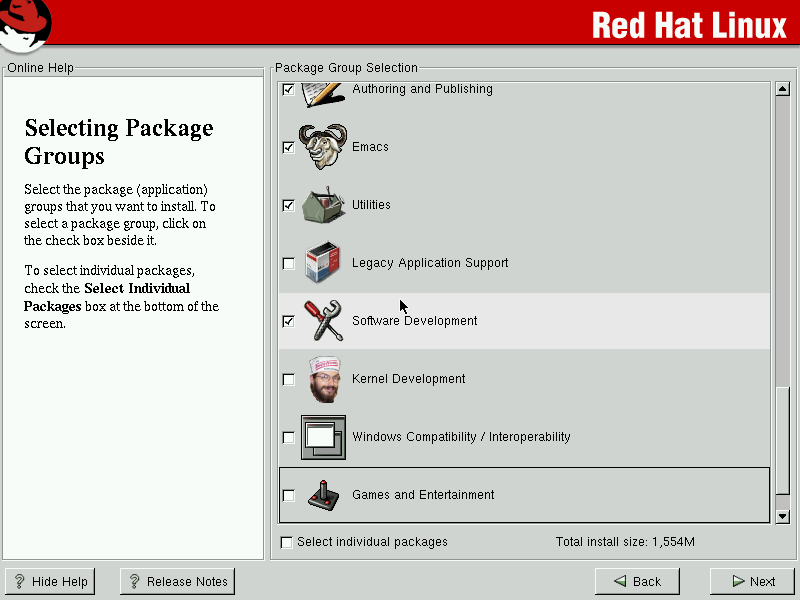

RedHat Linux 7.3 was released in 2002. Internet access in most places was still slow, so it was easier and cheaper to buy a CD or copy it from a friend than download it.
Package repositories as we know them today didn't exist yet, although there was an update utility and RedHat Network existed already, installing a package from a remote source in one command was not possible.
Anyway, let's just look at screenshots from the past.
Loading the CD takes us to the installer.
Hardware configuration and partitionining aren't all that interesting. What is more interesting is that back then installers usually didn't install a set of packages selected by the distro maintainers, but asked you what you want to install, up to individual packages.
Now just watch the progress bar.
Well, until the installer asks us to insert the next CD.
The installer tries to keep us entertained.
Maybe it's not a very health conscious advice, but they have a point. At the time, OS installation could easily take a couple of hours on average hardware.
With modern hardware, we don't have to wait so long of course.
When floppy drives are ubiquitous, a rescue floppy is quite a useful thing.
Time to reboot.
Graphical boot didn't exist at the time.
Finally we are at the login screen.
GNOME 1.4. Back then it would take some time to load and had a load progress screen, but now it loads too fast to easily make a screenshot of it.
Those days I preferred KDE though. This is 3.0.0.
Lots of settings.
It could even cosplay CDE, in a rather convincing way.
Binary packages for distros that old are hard to find, and finding and building old source tarballs is hardly worth the time, but we can look at some of the software included in the installation CDs.
AbiWord 0.99.5.
Mostly works, not with ODF and post-2000 MS Word format of course. Also, default fonts look awful.
Some things, like gnuplot's default colors, stayed the same for many years.
Ethereal before it was Wireshark.
KGhostView still displays PDFs pretty much fine. There was Acrobat Reader too, I don't remember if it was any better.
Python 1.5.
OCaml 3.06. The binary package somehow survived on an INRIA FTP site.
Mozilla 0.9.9. Still renders some websites sort of correctly.
Well, only some of them. Most are beyond any recognition.
Still it's better than Netscape. I couldn't find a single modern (not archived) website it would still be able to render.
If you want to install it yourself, images are still available from a number of servers, e.g. from archive.org/details/redhat-7.3_release. Works fine in VirtualBox, just don't use a SATA controller (SATA didn't exist at the time), IDE or SCSI should be fine. Mouse integration and the like obviously don't work, VirtualBox itself also didn't exist at the time.
{kind=link}
{kind=link}
{kind=link}
{kind=link}
{kind=link}
{kind=link}
{kind=link}
{kind=link}
{kind=link}
{kind=link}
{kind=link}
{kind=link}
{kind=link}
{kind=link}
{kind=link}
{kind=link}
{kind=link}
{kind=link}
{kind=link}
{kind=link}
{kind=link}
{kind=link}
{kind=link}
{kind=link}